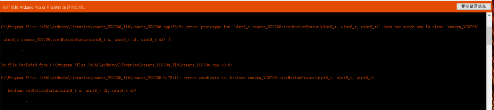
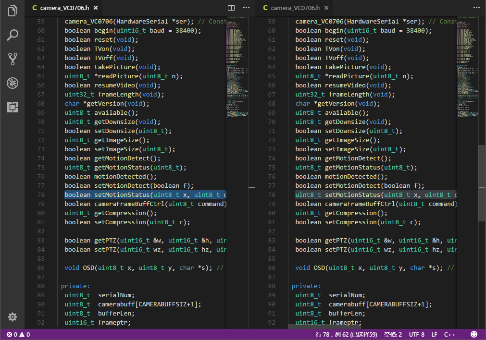
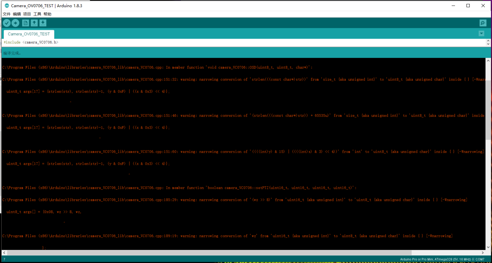
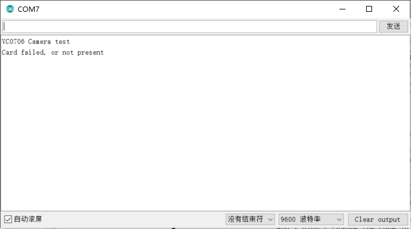

Doucments on the final project:
Idea:
When I was soldering on the class, a problem came to me. As I was always do the project myself, or seperately with people, how can I document and take the picture for what I am doing?
Then, an "easy" idea came to me. I can make a more protable camera or a wearable camera, which can help me record what I saw and for the document.
Investigation:
After searching online, there are a few posts that are doing the similar project. From a website it tells me why it is not practical simply record a video with the shanghaino board (aka arduino mini pro board). So I gave up on the video plan. But after more investigation, I saw someone asked about almost the same project from arduino community, which gave me a lot of confidence.
Day 1: the camera module arrived
Before the camera module arrived, I did some search online to find out how to hack with the module, or how to connect the camera module (ov7670) to the shanghaino. By downloading the packages on that website and did as told, the compiler report an error.
Basically, it means the function in cpp file doesn't match the declaration in the headfile. So I took a risk by changing the declaration on the function in the head file. (the code on the left is the old one) And I didn't change the code in the zip file.
Then, the arduino IDE finished compiling with some warnings:
After upload the code into the shanghaino board, the serial monitor shows what was expected (the SD card shield did not arrived yet)
